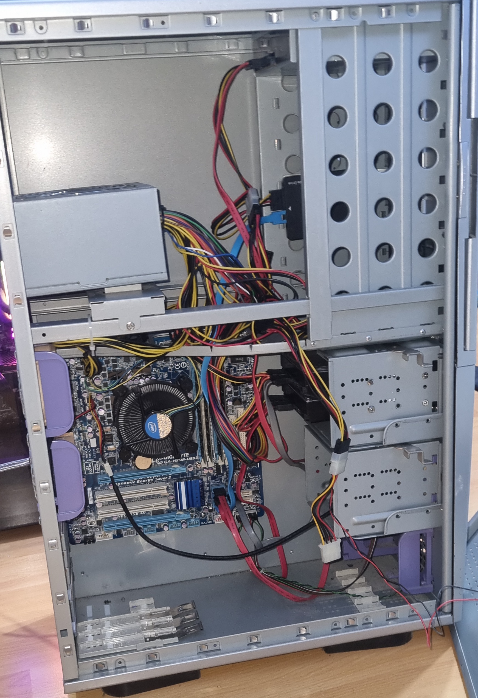
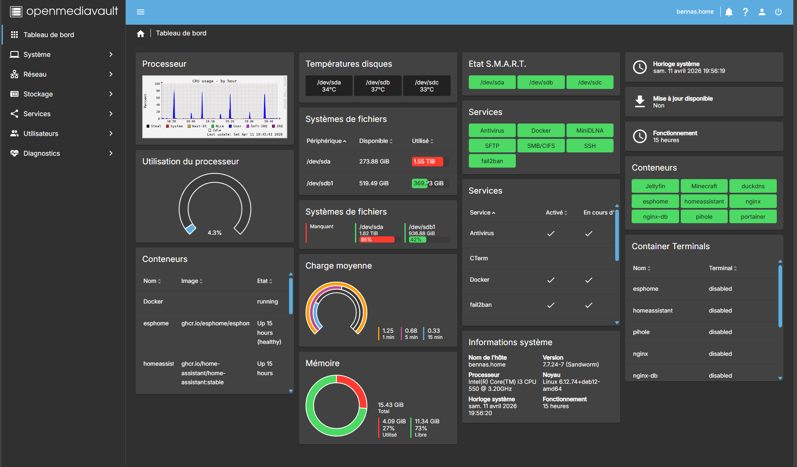
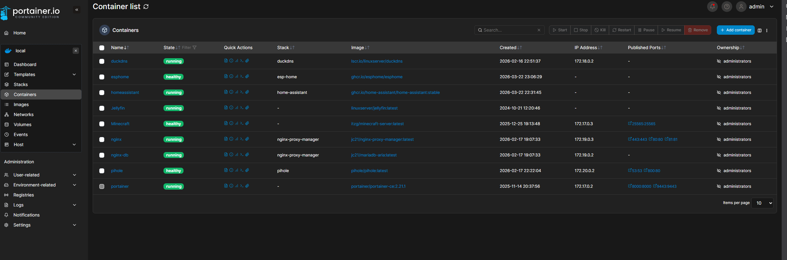
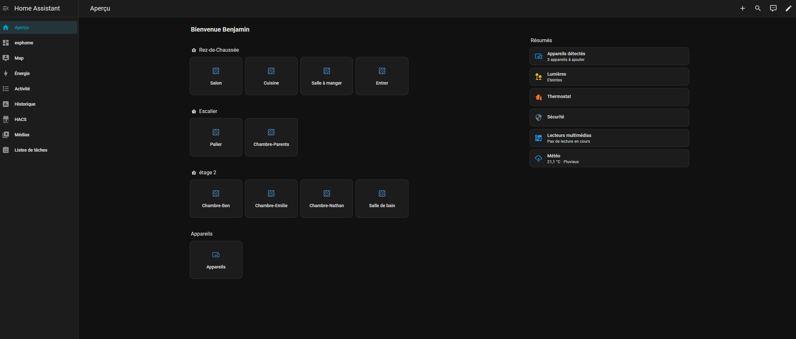
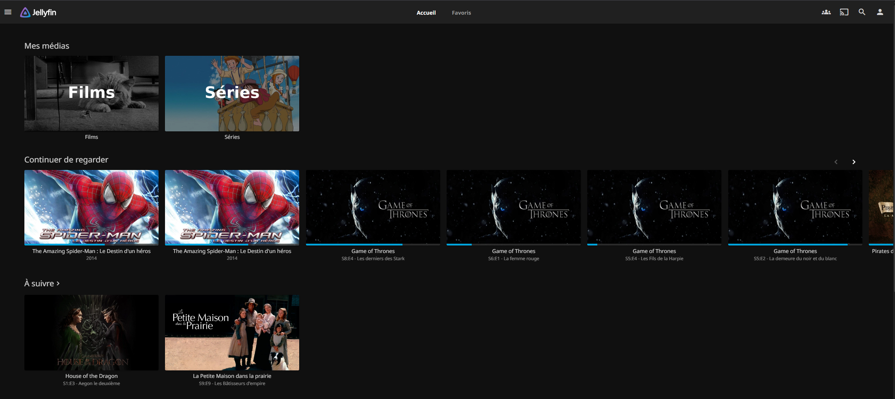
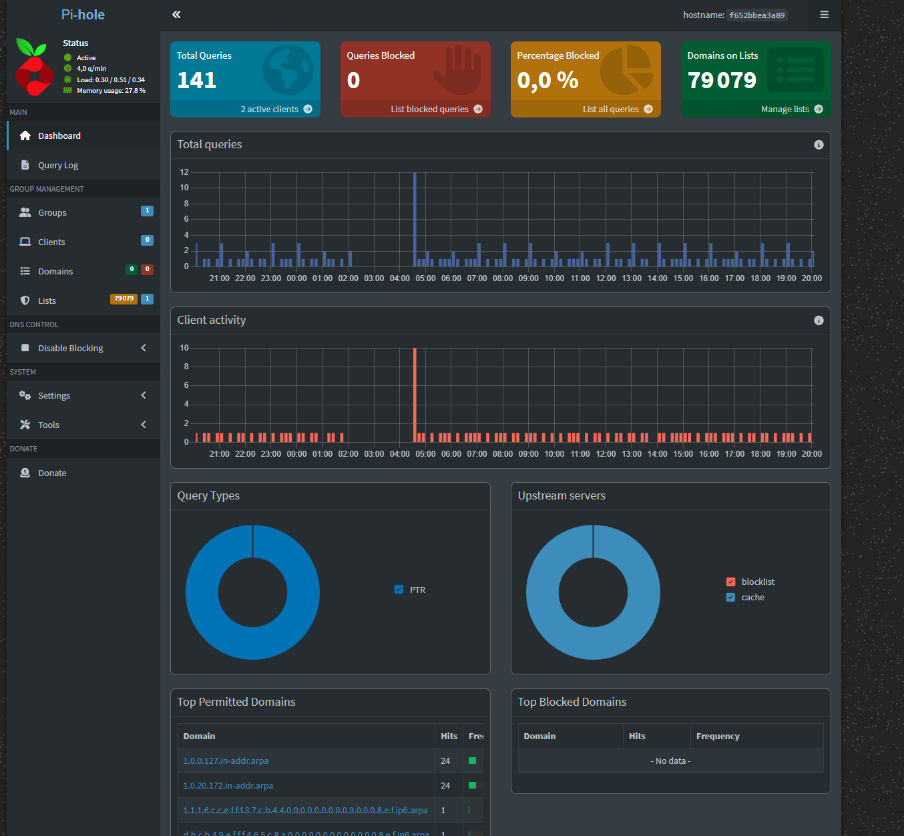
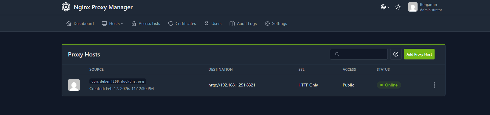

Secure Home Infrastructure
OpenMediaVault · Docker · WireGuard · Home Assistant · 12 services
Since 2023, I have been maintaining a complete home server infrastructure running 24/7. This project covers Linux system administration, Docker containerisation, network security, WireGuard VPN, Nginx reverse proxy, Pi-hole DNS, and home automation with Home Assistant + ESPHome.

📷 Real photo — Gigabyte GA-H55M-USB3 motherboard, Intel processor
Service network map
Hover over a node for details · Animated constellation
12 deployed services
OpenMediaVault
NAS OS — RAID, SMB/NFS shares, web admin.
Portainer CE
Docker web interface — containers, volumes, stacks.
Jellyfin
Personal media server — video/music streaming.
Minecraft Server
Multiplayer game server with automatic backups.
WireGuard VPN
Encrypted remote access — fast modern VPN.
Nginx Proxy Manager
Reverse proxy + automatic SSL/TLS Let's Encrypt.
DuckDNS
Dynamic DNS — domain always pointing to my IP.
Home Assistant
Open-source home automation — centralised connected devices.
ESPHome
ESP32/ESP8266 firmware — DIY sensors in HA.
Pi-hole
DNS ad & tracker blocking — entire local network.
Fail2Ban
Anti brute-force — automatically bans suspicious IPs.
LDAP + SSL/TLS
Centralised auth and communication encryption.
Tech stack
Key results
- Operational infrastructure 24/7 since 2023 — uptime > 99%
- 12 containerised services running in production simultaneously
- Secure VPN access from outside via WireGuard + DuckDNS
- Entire home network filtered by Pi-hole
- Home automation integrated via Home Assistant + DIY ESPHome sensors
BUT R&T Skills Framework
Proof






Roadmap
🚀 Future plans
- Monitoring : Grafana + Prometheus
- IDS/IPS : Suricata
- Nextcloud — sync fichiers chiffrés
- Vaultwarden — gestionnaire de mots de passe